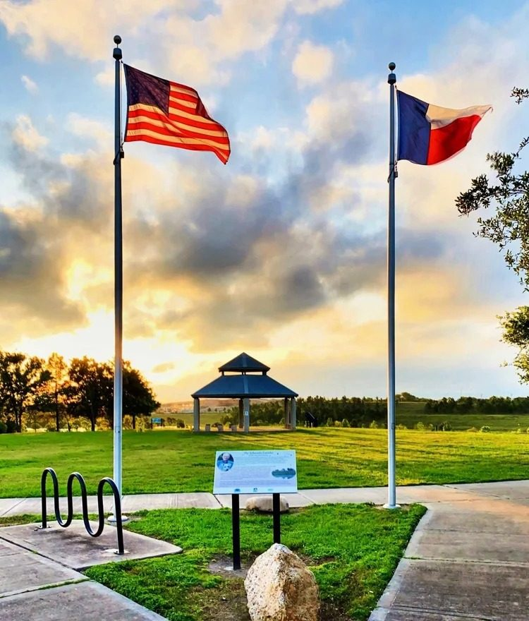

Bird surveys, fishing clinics, volunteer workdays, guided hikes, and seasonal celebrations: there's a reason to come back every month.
Third Saturday of every month except December, in partnership with Houston Audubon and the Nature Discovery Center. Meet at The Gathering Place lot. All skill levels welcome, beginners especially.
Hands-on stewardship: native planting, trail care, and habitat restoration. Come learn the park by helping care for it.
Learn the basics in a fun, hands-on session. Equipment and guidance provided, then out to Westbury Lake to fish. Great for kids and beginners.
A monthly morning loop with a Conservancy naturalist, one of the perks of membership.
MusicFEST has a long connection to Willow Waterhole. Now hosted by Houston's Levitt organization, the festival brings free live music to the greenway. The next festival is anticipated for Spring 2027. Learn more at levitthouston.org.
Visit Levitt Houston
Guided hikes. Seasonal walks like our National Trails Day hike explore prairie landscapes, wildlife, and scenic overlooks. All experience levels welcome.
Bluebonnet season. Each spring, the prairie bursts into Houston's signature wildflower, one of the best times of year to visit.
Foraging & nature walks. Learn to identify the native plants growing throughout the park on guided seasonal walks.
The Greenway as Venue. The trail system and elevation changes make Willow Waterhole a sought-after site for cross-country meets and fun runs. The Conservancy hosts a limited number of running events each year. Watch this page for announcements.
Most events are free and open to all. For dates and registration, email info@willowwaterhole.org or follow us on Facebook and Instagram.
Event recaps, park news, and the people and wildlife that make this place special, read anytime.
Read News & StoriesFollow us or drop us a line, and we'll let you know what's coming up at the Waterhole.
Get Event Updates